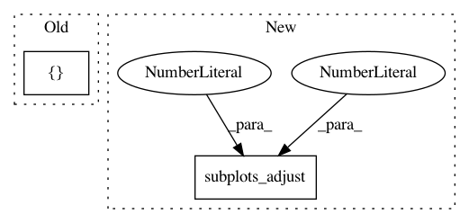

6d87b5fa03420a908fbf7e72868307dd6bc3223f,intro/matplotlib/examples/plot_multiplot.py,,,#,10
Before Change
transform=ax.transAxes)
ax = plt.subplot(2, 2, 3)
ax.set_xticklabels([])
ax.set_yticklabels([])
ax = plt.subplot(2, 2, 4)
After Change
import matplotlib.pyplot as plt
fig = plt.figure()
fig.subplots_adjust(bottom=0.025, left=0.025, top = 0.975, right=0.975)
plt.subplot(2, 1, 1)
plt.xticks(()), plt.yticks(())
In pattern: SUPERPATTERN
Frequency: 4
Non-data size: 2
Instances
Project Name: scipy-lectures/scipy-lecture-notes
Commit Name: 6d87b5fa03420a908fbf7e72868307dd6bc3223f
Time: 2016-09-15
Author: gael.varoquaux@normalesup.org
File Name: intro/matplotlib/examples/plot_multiplot.py
Class Name:
Method Name:
Project Name: dmnfarrell/pandastable
Commit Name: 05220d53e8e12f2c9a82c1dc6d7d7cbfee130d60
Time: 2015-09-13
Author: farrell.damien@gmail.com
File Name: pandastable/plotting.py
Class Name: PlotViewer
Method Name: plot2D
Project Name: scikit-learn/scikit-learn
Commit Name: 97185ecd3ec0bc8409781f3259b2436ba2a075bb
Time: 2019-09-20
Author: thomasjpfan@gmail.com
File Name: examples/inspection/plot_partial_dependence.py
Class Name:
Method Name:
Project Name: BaselAbujamous/clust
Commit Name: 203adb3fe11998c0e1febe3e46d9ee20d72d2a16
Time: 2018-08-29
Author: basel.abujamous@plants.ox.ac.uk
File Name: clust/scripts/graphics.py
Class Name:
Method Name: plotclusters